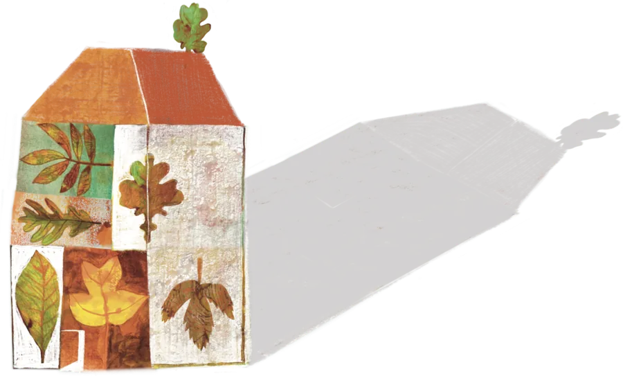

Mondi illustratiRassegne teatrali
Teatro sotto gli alberi - inverno
un progetto di teatro, casa e natura
- Committente
- Molino Rosenkranz
- Tecnica
- Mista: gouache e digitale
Illustrazione per la rassegna di teatro ragazzi – Associazione Molino Rosenkranz Un viaggio visivo nel mondo dell'infanzia, della natura e della meraviglia. Per la rassegna teatrale dedicata ai più piccoli organizzata da Molino Rosenkranz, ho realizzato un panorama illustrato che intreccia personaggi fiabeschi, elementi della natura e atmosfere accoglienti.
«In ascolto del vento, tra fiori leggeri e passi di danza: il teatro è una casa aperta alla meraviglia.»